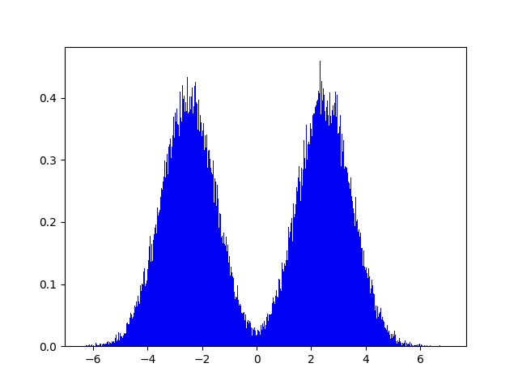

Each Person Should Do What Each Other Person is Not.
Rare Events are Always Unexpected
Volatile Foolishness Does Not Make You On Average Correct
This isn't exactly a book review, because there are many, many places to read what other people think about this book. What follows is a collection of my critiques and thoughts on Fooled by Randomness by Nasim Nicholas Taleb (NNT), as well as some of the ideas that I found most interesting. Whenever I read a book that is not a textbook rigoursly edited, I question what is presented by the author.
Is what I am reading true given the assumptions? Are the assumptions valid? What might be some edge cases where the author's ideas break down? Have there been examples in history where I can point to and say that contradicts what the author is saying?
The above is by no means exhaustive, but those questions serve as a good starting point for me whenever I read opinions and new ideas on any topic.
All excerpts below are the intellectual property of NNT, and are taken directly from a pdf version of Fooled by Randomness.
Taking Taleb’s advice to do what other people do not do is k-level 1 reasoning, and this advice is akin to saying “bet on the net direction of the market that the majority of the crowd will bet on”. Thus, Taleb is essentially a boiling down the market to a consensus game, where one wins being in the majority, similar in theory to the Keynesian Beauty Contest or Alain Ledoux’s “Guess 2/3 of the Average” game. Interestingly, these games have no strictly dominant strategy.
When I hear the word unexpected and events in a sentence, I naturally think about expected events. For instance, when someone says “The expectation of a single die roll is 3.5”, it does not mean we expect to see the die face turn up the number 3.5 when it stops rolling! That would be impossible. Perhaps a better example would be a bi-modal distribution.
The probability of selecting a value in the range [-0.1,0.1] from the distribution is near 0, and thus can appropriately be deemed a rare event. However, the expectation of this distribution also appears to be somewhere in the range [-0.1,0.1] as the distribution is nearly symmetrical. This rare event is the expectation of the set of outcomes from which this event is drawn, thus refuting the claim that “Rare events are always unexpected”.
At the very end of the book, Taleb states “I am just like every single character whom I ridiculed” and spins this into being okay because he is cognizant of being a fool to randomness, actively attempting to fight it, unlike every other so-called fool. He defends the “desire to be free from our own past statements” and goes on to compliment George Soros for publicly revising his opinion rapidly.
Let us imagine we ask a trader their opinion on how many bps the Federal Reserve will raise rates at next month’s FOMC meeting. On Monday, they say 50 bps, Tuesday they say 75bps, Wednesday 100bps, Thursday 25bps, and on Friday they are back to thinking 50bps is the most likely outcome. How could you ever rely on the opinion of someone like this? The answer you receive is a function of the time at which you poll them. In other words, the volatility of their answers makes it impossible to determine a signal from noise, and their opinion becomes near worthless. Would you want a doctor who changes their diagnosis every day?
I agree with Taleb that path dependence on beliefs is dangerous (take for example a physics researcher unwilling to discard ideas that do not fit into the Standard Model, String Theory, or M-theory). However, the frequency at which one exhibits path independence in their thought can be cause for concern as highlighted above.
The implications of this simple concept are significant, for example, it calls into question the validity of using expected value of a game to decide how much you are willing to play it.
This is at the core of why hedge funds blow up (so much for hedging), why Las Vegas still has its lights on, or why people smoke cigarettes knowing the deadly warnings on boxes. Even the brilliant John Nash, was killed in a car crash along with his wife where neither of one of them was wearing a seatbelt.
Risk-As-Feeling just means that how attractive odds like $+500$ are to two people varies due to how those individuals differently process emotions felt by a win or loss. Interestingly, this ties into the next topic.
Awarded a Nobel Memorial Prize in Economics, Kahneman and Tversky developed prospect theory describing human decision making leads to sub-optimal choices (in terms of expected utility). A direct implication as Taleb notes in *Fooled by Randomness* is that humans think in relative differences, not absolute wealth, for if the goal was to maximize absolute wealth, rational agents would not exhibit the behavior Kahneman and Tversky describe. This behavior can be dangerous, particularly if the reference point the agent is anchoring to is a losing position. All of this behavioral econ is interesting in its own right, but the question of what behavior traders exhibit is even more interesting because of selection bias: a community of traders is not a representative sample of the psychology of the general human population. The “average” trader (and by default mildly successful trader, considering they are employed and not blown out) likely has some training in risk management. Perhaps they are familiar with Kahneman or have read Taleb themselves.
It may be impossible to determine who we are up against in the markets on a trade-by-trade basis, but knowing the behavior of market participants in aggregate, the way Khaneman and Tversky have accessed individuals can be extremely valuable. Taleb himself has made a career being aware of psychological bias, proclaiming “I try to make money infrequently, as infrequently as possible, simply because I believe that rare events are not fairly valued and that the rarer the event, the more undervalued it will be in price.”
This is the Lucas critique, and I think it is intimately connected it to stationarity, which is when observing a sample of the past does not necessarily provide us with knowledge of the future. Taleb touches on this briefly in Fooled by Randomness when he criticizes empiricism, an over-reliance on what has actually happened, and neglect of alternative sample paths.